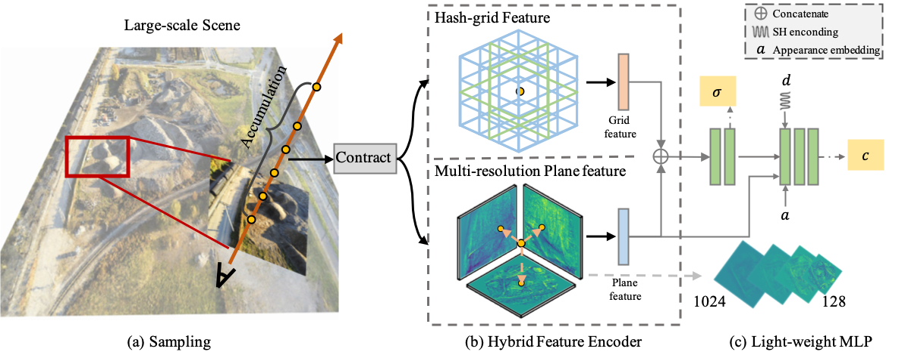

Abstract
Existing neural radiance fields (NeRF) methods for large-scale scene modeling require days of training using multiple GPUs, hindering their applications in scenarios with limited computing resources. Despite fast optimization NeRF variants have been proposed based on the explicit dense or hash grid features, their effectivenesses are mainly demonstrated in object-scale scene representation. In this paper, we point out that the low feature resolution in explicit representation is the bottleneck for large-scale unbounded scene representation.
To address this problem, we introduce a new and efficient hybrid feature representation for NeRF that fuses the 3D hash-grids and high-resolution 2D dense plane features.
Compared with the dense-grid representation, the resolution of a dense 2D plane can be scaled up more efficiently.
Based on this hybrid representation, we propose a fast optimization NeRF variant, called GP-NeRF, that achieves better rendering results while maintaining a compact model size.
Extensive experiments on multiple large-scale unbounded scene datasets show that our model can converge in 1.5 hours using a single GPU while achieving results comparable to or even better than the existing method that requires about one day's training with 8 GPUs.
Methodology

First, we sample 3D points along the rays emitted from pixels. Second, we parameterize the space into a contracted space for a compact space parameterization.
Then, querying the position into the proposed hybrid-representation to extract hashg-rid feature and multi-resolution plane features, which are fed into
a light-weight MLP to predict the sigma and the color values (color MLP requires the additional view directions, appearance embeddings, and plane feature input).
Finally, the image colors can be computed by volume rendering.